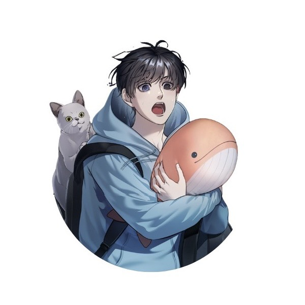

Author
Softcoral หรือ 연산호
นักเขียนนิยายชาวเกาหลีใต้ ที่มีชื่อเสียงโด่งดังจากผลงานแนวโมเดิร์นแฟนตาซี
วิทยาศาสตร์ และการเอาชีวิตรอด
แสงที่งดงามที่สุด
อาจซ่อนอยู่ในความมืด
ที่ลึกที่สุด
어두운 바다의 등불이 되어
ใต้สมุทรไม่สิ้นแสง

ทันตแพทย์
ทันตแพทย์หนุ่มผู้เพิ่งเข้ามาทำงาน ณ สถานีใต้ทะเลนานาชาติแปซิฟิกเหนือ ได้เพียง 5 วัน น่ารัก จิตใจดี มีเมตตา ผู้มาโปรด พระเจ้าของเหล่าปวงชนทุกคน
ข้อมูลเกี่ยวกับเรื่อง ใต้สมุทรไม่สิ้นแสง
Softcoral หรือ 연산호
นักเขียนนิยายชาวเกาหลีใต้ ที่มีชื่อเสียงโด่งดังจากผลงานแนวโมเดิร์นแฟนตาซี
วิทยาศาสตร์ และการเอาชีวิตรอด
สำนักพิมพ์ cloverbook publishing
เหมาะสำหรับผู้ที่ชื่อชอบในการอ่านนิยายไซไฟ แฟนตาซี การเอาชีวิตรอด และผู้อ่านที่ชอบเรื่องราวที่เกี่ยวข้องกับทะเล ไม่จำเป็นจะต้องมีความรู้เกี่ยวกับวิทยาศาสตร์ก็อ่านเข้าใจ แต่ไม่เหมาะกับผู้อ่านที่กลัวที่แคบ และใต้ทะเลลึก เพราะในหนังสือมีการบรรยายบ่อยครั้ง
มี 10 เล่มจบ รวมตอนพิเศษ 1 เล่ม
สถานะตอนนี้ ออกมา 8 เล่ม ยังไม่จบ
กำลังเปิดนัดรับที่งานมหกรรมหนังสือระดับชาติ ครั้งที่ 31 (Book Expo Thailand 2026)
หนังสือราคาเริ่มต้นที่ 290 บาท - 360 บาท ไม่รวมส่วนลดจากการจัดโปรโมชัน
ซื้อเล่ม 1-9
ตอนนี้ได้ราคา 2,860 บาท นัดรับงานหนังสือฟรีค่าจัดส่ง
ชื่อด้อมชาวออบาดึง ภาษาเกาหลี คือ 등러 ที่แปลว่า "กลุ่มคนที่เป็นแสงตะเกียง"
ชื่อด้อม ภาษาไทย
คือ บาดึงเล่อ